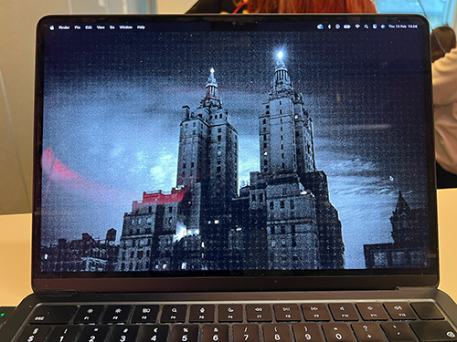

Min computer
Macbook air
MacBook Air (M2, 2022) er en let og kraftfuld bærbar computer med et tyndt aluminiumsdesign, en 13,6" Liquid Retina-skærm og Apples M2-chip. Den leverer høj ydeevne, lang batteritid og en næsten lydløs drift uden blæser. Med et forbedret tastatur, MagSafe-opladning og et skarpt 1080p webcam er den ideel til både arbejde og underholdning.
Specifikationer
The MacBook Air (M2, 2022) features a 13.6-inch Liquid Retina display with a resolution of 2560 × 1664 pixels, 500 nits brightness, P3 wide color, and True Tone technology. It has a thin and light aluminum unibody design, measuring 11.3 mm in thickness and weighing 1.24 kg. Available in Silver, Starlight, Space Gray, and Midnight, it is powered by the Apple M2 chip, which includes an 8-core CPU with 4 performance and 4 efficiency cores.